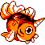
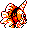

#119
Seaking
Water
In the autumn spawning season, they can be seen swimming power- fully up rivers and creeks
Base stats Total 385
HP80
Attack92
Defense65
Speed68
Special80
Details
- Species
- Goldfish
- Height
- 4'03"
- Weight
- 86.0 lb
- Catch rate
- 60
- Base exp
- 170
- Growth
- Medium Fast
Level-up moves
LevelMoveType
StartPeck
StartTail WhipNormal
StartSupersonicNormal
Lv 22Horn AttackNormal
Lv 29WaterfallWater
Lv 33AgilityPsychic
Lv 38SurfWater
Lv 44Hydro PumpWater
Lv 48Double-EdgeNormal
Evolution
Evolves from Goldeen
Where to find
TM / HM
TM03 Swords DanceTM06 ToxicTM08 Body SlamTM09 Take DownTM10 Double-EdgeTM11 BubblebeamTM12 Water GunTM13 Ice BeamTM14 BlizzardTM15 Hyper BeamTM31 MimicTM32 Double TeamTM34 BideTM39 SwiftTM44 RestTM50 SubstituteHM03 Surf